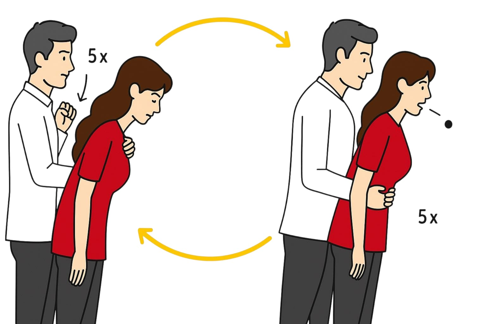

Ersticken ist ein Notfall, bei dem die Atemwege durch einen Fremdkörper blockiert sind. Ohne Hilfe kann es in wenigen Minuten lebensgefährlich werden. Erste Hilfe zielt darauf ab, die Blockade schnell zu lösen und die Atmung wiederherzustellen. Je nach Alter und Zustand der betroffenen Person unterscheiden sich die Maßnahmen.
Ein milder Erstickungsanfall kann durch Husten überwunden werden. Bei schwerem Erstickungsanfall ist sofortiges Eingreifen notwendig.
Wenn eine Person noch husten, sprechen oder atmen kann, ermutige sie zum Husten, um die Blockierung zu lösen. Beobachte die Person aufmerksam – der Zustand kann sich verschlechtern.
Anzeichen: Die Person kann nicht mehr husten, sprechen oder atmen.
Rückenschläge: Stelle dich hinter die Person, stütze den Brustkorb mit einer Hand und beuge sie nach vorne. Gib mit dem Handballen der anderen Hand bis zu fünf kräftige Schläge zwischen die Schulterblätter. Prüfe nach jedem Schlag, ob die Atemwege frei sind.
Bauchstöße (Heimlich-Handgriff): Stelle dich hinter die Person, lege beide Arme um die Taille. Mache eine Faust und platziere sie zwischen Bauchnabel und Rippen. Lege die andere Hand darüber und drücke bis zu fünf Mal kräftig nach innen oben. Prüfe nach jedem Stoß, ob die Blockade gelöst ist.
Wechsle abwechselnd fünf Rückenschläge und fünf Bauchstöße, bis sich die Blockade löst oder die Person nicht mehr reagiert.
Wenn die Person nicht mehr reagiert: Beginne sofort mit der Herz-Lungen-Wiederbelebung (HLW). Entferne nur das, was du im Mund deutlich sehen und sicher erreichen kannst. Greife niemals wahllos in den Mund, da du die Blockade sonst verschlimmern könntest.
Milder Anfall: Beobachte das Baby – kann es husten, sollte man es dazu ermutigen. Bleibe in der Nähe und beobachte den Zustand genau.
Schwerer Anfall: Das Baby kann nicht husten oder atmen.
Rückenschläge: Halte das Baby mit dem Gesicht nach unten auf deinem Unterarm oder Schoß, der Kopf sollte tiefer als der Körper liegen. Stütze das Kinn, ohne den Hals zu drücken. Gib mit dem Handballen bis zu fünf kräftige Schläge zwischen die Schulterblätter. Prüfe nach jedem Schlag, ob die Atemwege frei sind.
Bruststöße: Drehe das Baby um, sodass es mit dem Rücken auf deinem Unterarm liegt, der Kopf weiterhin tiefer als der Körper. Gib mit zwei Fingern in der Mitte des Brustkorbs (unterhalb der Brustwarzen) bis zu fünf Bruststöße (etwa ein Drittel der Brustkorbtiefe). Prüfe nach jedem Stoß, ob die Blockade gelöst ist.
Wechsle zwischen fünf Rückenschlägen und fünf Bruststößen ab, bis sich die Blockade löst oder das Baby wieder reagiert.
Wenn das Baby nicht mehr reagiert: Beginne sofort mit der Herz-Lungen-Wiederbelebung (HLW) für Babys. Entferne nur das, was du im Mund deutlich sehen und sicher erreichen kannst. Greife niemals wahllos in den Mund, da du die Blockade sonst verschlimmern könntest.